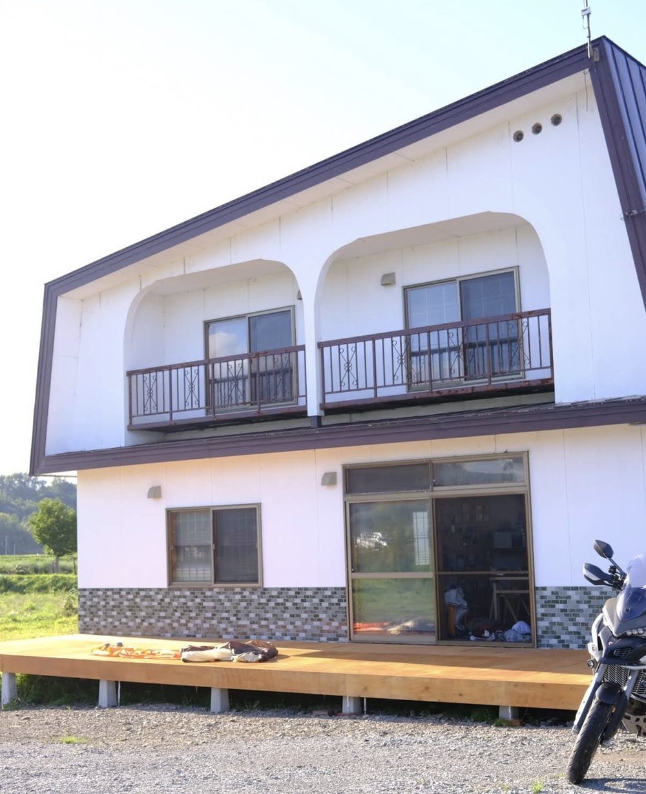
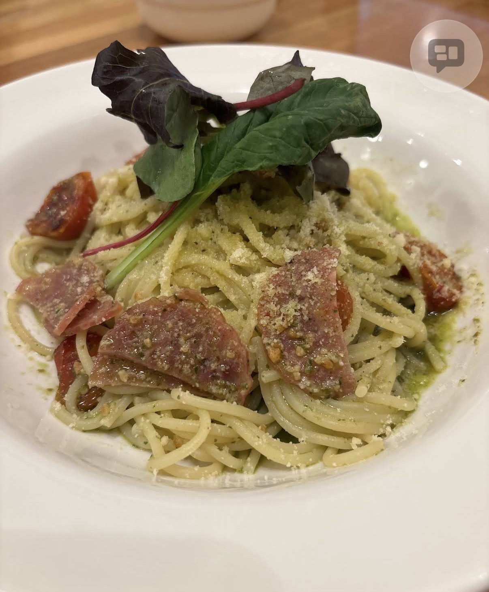
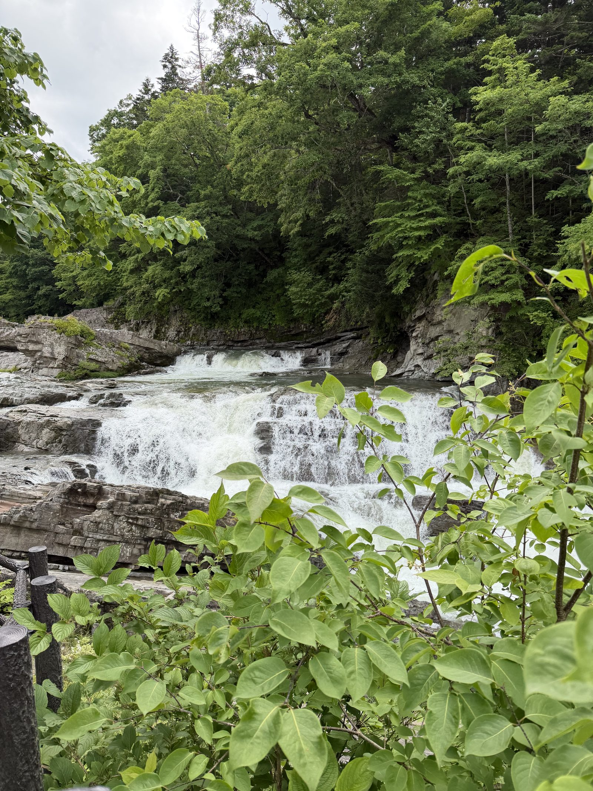
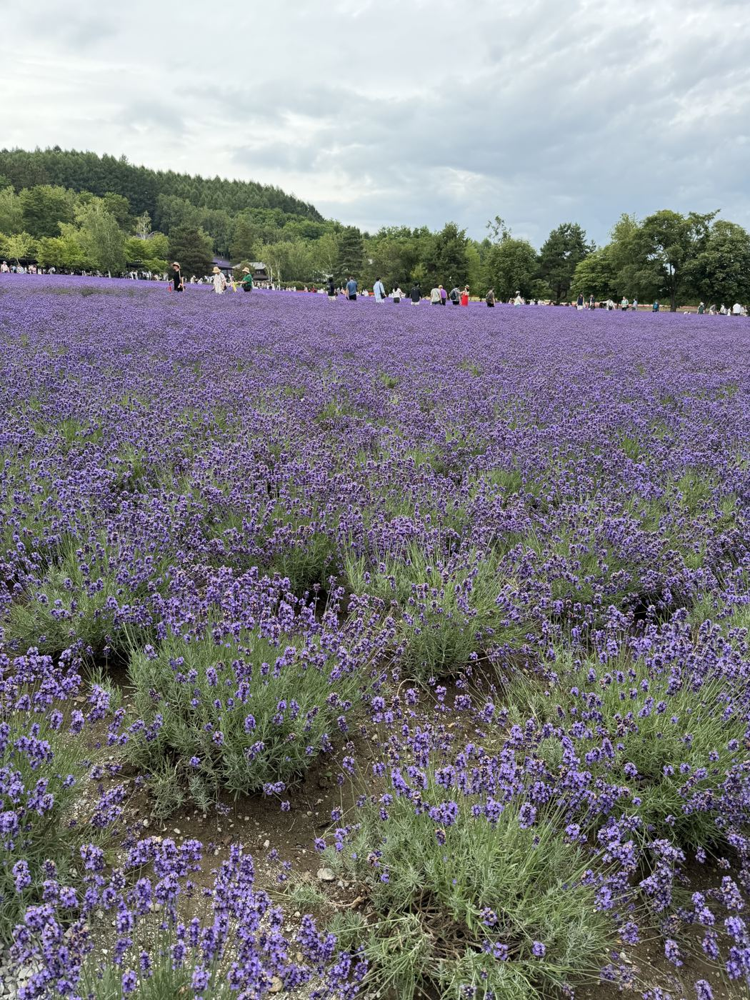
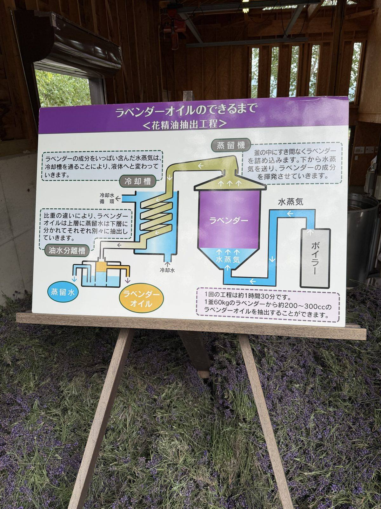
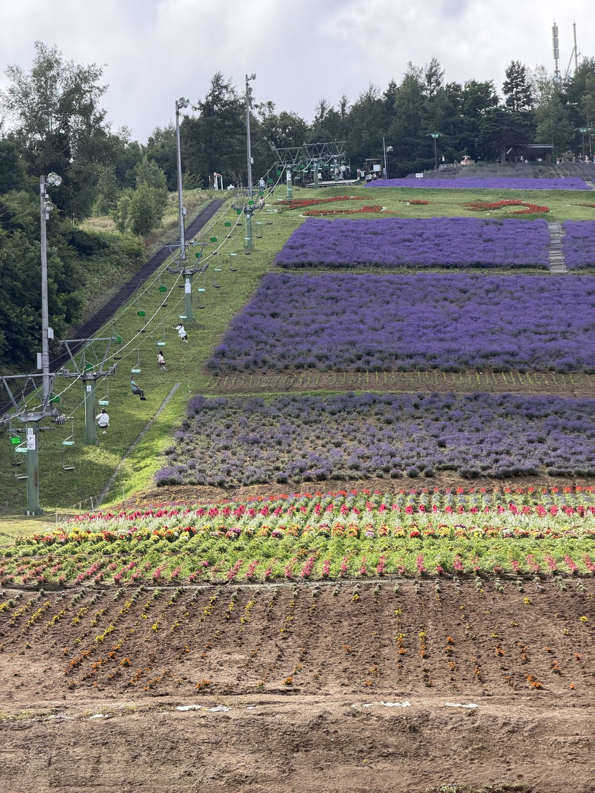
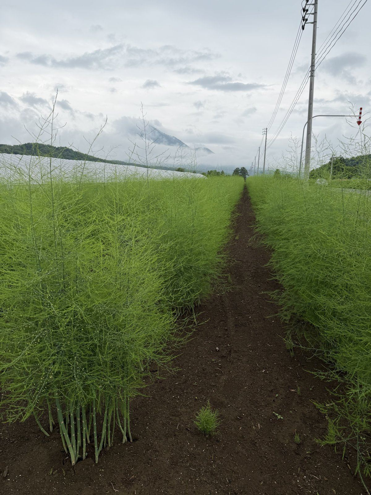
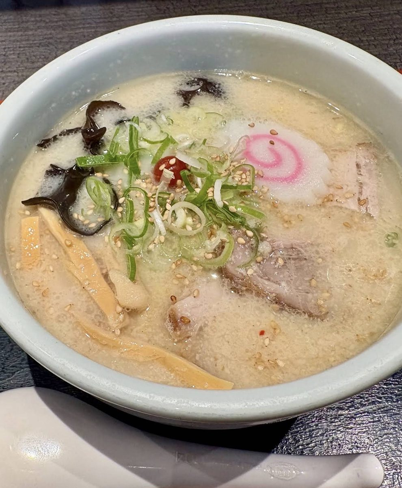
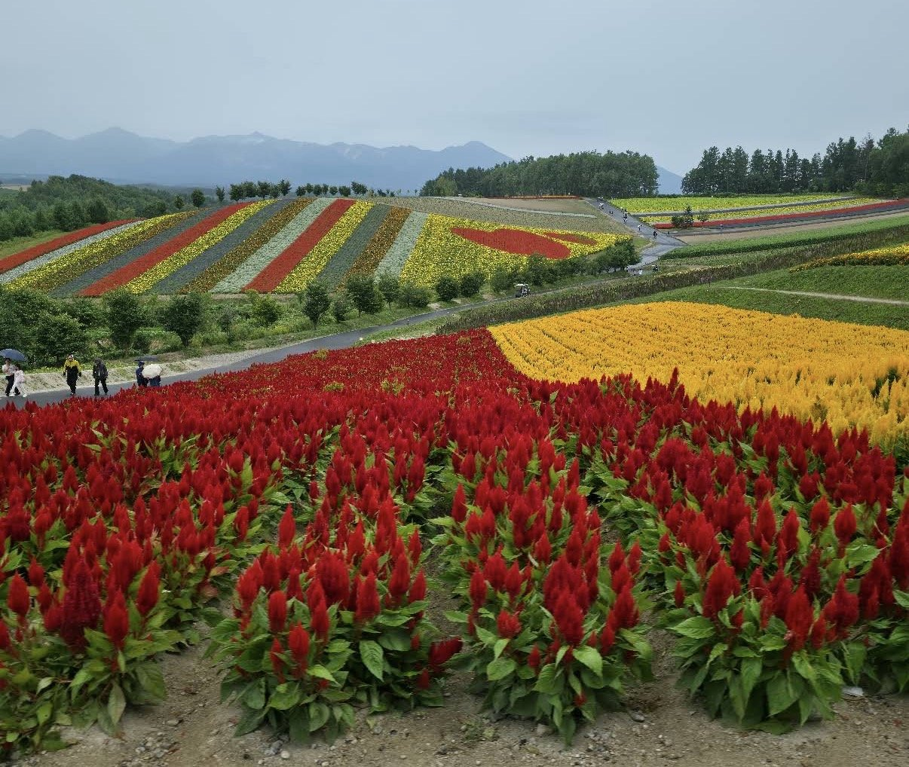

It's still 14 July, still Day 8. But I already know where I'm sleeping tonight and what's next door tomorrow — so I asked AI to build tomorrow's route before tomorrow arrives.
今天还是7月14日，第八天。但我已经知道今晚睡哪，也知道明天就在隔壁 — 于是我请AI在明天到来之前，先把明天的路线做出来。
I'm partway through Day 8 of this trip — still on the road, not even checked in for the night yet. But I already know I'm staying two nights at the same guesthouse, and I already know roughly what's next door tomorrow: a flower hill and a scenic road. So instead of waiting until tomorrow morning to plan it, I asked AI to build tomorrow's route today, using yesterday's map as the template to copy.
这趟旅程我才走到第八天，人还在路上，晚上的酒店都还没入住。但我已经知道接下来要在同一家民宿住两晚，也大概知道明天隔壁就是花丘和一条风景公路。所以我没有等到明天早上才规划，而是直接请AI今天就把明天的路线做出来，并且照搬昨天地图的格式。
The whole instruction was short: build Day 9's map, and make it follow Day 8's — same layout, same animated car, same distance table, same bilingual pages. I didn't have to re-explain any of that; it was already sitting in the previous day's page as a template to copy.
整个指令很简短：做出第九天的地图，并且要跟第八天保持一致 — 相同的版面、相同的动画小车、相同的距离表、相同的中英日双语页面。这些我完全不用重新解释一遍 — 它们本来就写在前一天的页面里，可以直接照搬。
This is a live copy of the exact route now sitting on my Niseko Day 9 log — a day that, as I write this, hasn't happened yet. Press play and watch it drive from the guesthouse to the flower hill, along the scenic road to the famous lone tree, out to the optional flower-field detour, and back to the guesthouse for the second night.
这是二世谷第九天日志中那条真实路线的实时副本 — 而写这篇文章的此刻，那一天其实还没发生。点击播放，看它从民宿开到花丘，沿着风景公路开到著名的孤树景点，再绕到可选的花田景点，最后返回民宿住第二晚。
A route planned a day ahead is only a guess about tomorrow, not a promise. None of Stop B, C or D's coordinates on this map are confirmed — they're placed close enough to be useful, with a visible warning on each one, and every navigation button points at the written address instead of the pin. I'll only swap in real coordinates once I actually stand there tomorrow and can confirm the pin myself.
提前一天规划的路线，终究只是对明天的一种推测，而不是承诺。地图上B、C、D三个点的坐标目前都未经确认 — 位置足够接近可供参考，每一处都带有明显警示，所有导航按钮都指向文字地址而非地图上的点。只有等我明天真正站在那里、能亲自确认定位后，才会换上真实坐标。
Day 9 was planned before it happened, but Day 8 — the day this template was copied from — is already real. Here are all eight photos from that day's log, the trip that gave AI the format to copy for tomorrow.
第九天是在还没发生之前就规划好的，但作为其模板来源的第八天，已经是真实发生过的一天。以下是那天日志里的全部八张照片 — 正是这趟行程，给了AI一份可以照搬用于“明天”的格式。








Tap any photo to open the full Day 8 log, where each one has its full bilingual story.
点击任意照片可打开完整的第八天日志，每张照片都配有完整的中英文故事。
The photo below was the first stand-in for Stop B — a screenshot that arrived mid-session with no caption, close enough to use temporarily. It's since been swapped out: the live Day 9 map now pulls a real Wikipedia photo for Shikisai no Oka automatically, and this screenshot lives on here instead, as a record of the guess that came before it. Once Day 9 actually happens, real photos replace both.
下面这张照片是B点最初的替代图 — 一张在对话中途出现、没有任何说明的截图，当时权且拿来暂用。如今它已被替换：第九天地图现在会自动为四季彩之丘调用真实的维基百科照片，而这张截图则留在这里，作为此前那次猜测的记录。等第九天真正到来后，两处都会换上真实照片。

I used to plan a trip once, weeks before flying, and hope it still made sense by the time I got there. Now I can hand AI one line — "follow yesterday's format, but for tomorrow" — the night before, and wake up to a route that's already waiting, already honest about what it isn't sure of yet.
以前我总是提前几周把整趟行程规划好一次，然后祈祷等真正出发时它还合用。现在，我只需要在前一晚交给AI一句话——“照昨天的格式，但换成明天”——第二天一早，一条路线就已经在等着我，而且它对自己还不确定的地方，也说得明明白白。
That's the part that still surprises me most: it's not just fast, it's honest about its own guesses. A 70-year-old retiree can plan tomorrow's day out the night before, just by talking — and still know exactly which parts to double-check.
这才是最让我惊讶的地方：它不只是快，还对自己的猜测坦诚相待。一位70岁的退休老人，只需在前一晚聊几句，就能规划好明天的行程 — 而且清楚知道哪些地方还需要自己再核实一遍。
— Paul Yeo, July 2026 🌟